측량및지형공간정보산업기사 (2019-03-03 기출문제)
1과목: 응용측량
1. 지하 500m에서 거리가 400m인 두 지점에 대하여 지구 중심에 연직한 연장성이 이루는 지표면의 거리는? (단, 지구 반지름 R=6370km)
- 399.07m
- 400.03m
- 400.08m
- 400.10m
(정답률: 48%)

2. 깊이 100m, 지름 5m인 1개의 수직터널에 의해서 터널 내외를 연결하는 데 사용하기에 가장 적합한 방법은?
- 삼각법
- 지거법
- 사변형법
- 트랜싯과 추선에 의한 방법
(정답률: 83%)
3. 심프슨 제2법칙을 이용하여 계산할 경우, 그림과 같은 도형의 면적은? (단, 구간의 거리(d)는 동일하다.)
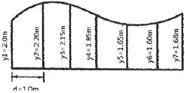
- 11.24m2
- 11.29m2
- 11.32m2
- 11.47m2
(정답률: 58%)
4. 해저의 퇴적물인 저질(bottom material)을 조사하는 방법 또는 장비가 아닌 것은?
- 채니기
- 음파에 의한 해저탐사
- 코올
- 채수기
(정답률: 68%)
5. 도로의 기울기 계산을 위한 수준측량 결과가 그림과 같을 때 A, B점간의 기울기는? (단, A, B점간의 경사거리는 42m이다.)
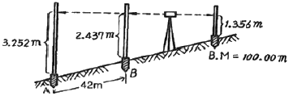
- 1.94%
- 2.02%
- 7.76%
- 10.38%
(정답률: 56%)
6. 하천에서 수심측량 후 측점에 숫자로 표시하여 나타내는 지형표시 방법은?
- 점고법
- 기호법
- 우모법
- 등고선법
(정답률: 82%)
7. 하천의 유속을 부자로 측정할 때에 대한 설명으로 옳지 않은 것은?
- 홍수 시 유속을 측정할 때는 하천 가운데서 부자를 띄우고 평균유속의 80~90%를 전단면의 유속으로 볼 수 있다.
- 수심 H인 하천에서 수중부자를 이용하여 1점의 유속을 관측할 경우에는 수면에서 0.8H되는 깊이의 유속을 측정한다.
- 표면부자를 쓸 경우 표면유속의 80~90% 정도를 그 연직선 내의 평균유속으로 볼 수 있다.
- 부자의 유하거리는 하천 폭의 2배 이상으로 하는 것이 좋다.
(정답률: 76%)
8. 완화곡선 중 곡률이 곡선의 길이에 비례하는 곡선으로 정의되는 것은?
- 콜로소이드(Clothoid)
- 렘니스케이트(Lemniscate)
- 3차 포물선
- 반파장 sine 체감곡선
(정답률: 77%)
9. 유토곡선(mass curve)에 의한 토량계산에 대한 설명으로 옳지 않은 것은?
- 곡선은 누가토량의 변화를 표시한 것으로, 그 경사가 (-)는 깍기 구간, (+)는 쌓기 구간을 의미한다.
- 측점의 토량은 양단면평균법으로 계산할 수 있다.
- 곡선에서 경사의 부호가 바뀌는 지점은 쌓기 구간에서 깍기 구간 또는 깍기 구간에서 쌓기 구간으로 변하는 점을 의미한다.
- 토적곡선을 활용하여 토공의 평균운반거리를 계산할 수 있다.
(정답률: 73%)
10. 단곡선 설치에서 곡선반지름이 100m이고 교각이 60°이다. 곡선시점의 말뚝 위치가 No. 10+2m일 때 도로의 기점으로부터 곡선종점까지의 거리는? (단, 중심말뚝간격은 20m이다.)
- 104.72m
- 157.08m
- 306.72m
- 359.08m
(정답률: 61%)
11. 축척 1:5000의 지적도상에서 16cm2로 나타나 있는 정방형 토지의 실제 면적은?
- 80000m2
- 40000m2
- 8000m2
- 4000m2
(정답률: 62%)
12. 도로 또는 철도의 설치 시 차량의 탈선을 방지하기 위하여 곡선의 안쪽과 바깥쪽의 이차를 두게 되는데 이것을 무엇이라 하는가?
- 확폭
- 슬랙
- 캔트
- 슬래브
(정답률: 74%)
13. 시설물의 경관을 수직시각(θｕ)에 의하여 평가하는 경우, 시설물이 경관의 주제가 되고 쾌적한 경관으로 인식되는 수직시각의 범위로 가장 적합한 것은?
- 0°≤θｕ≤15°
- 15°≤θｕ≤30°
- 30°≤θｕ≤45°
- 45°≤θｕ≤60°
(정답률: 55%)
14. △ABC에서 ㉮:㉯:㉰의 면적의 비를 각각 4:2:3으로 분할할 때 EC의 길이는?
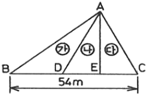
- 10.8m
- 12.0m
- 16.2m
- 18.0m
(정답률: 76%)
15. 교각 I=80°, 곡선 반지름 R=180m인 단곡선의 교점(I.P.)의 추가거리가 1152.52m일 때 곡선의 종점(E.C.)의 추가거리는?
- 1001.48m
- 1106.34m
- 1180.11m
- 1252.81m
(정답률: 57%)
16. 삼각형의 3변의 길이가 a=40m, b=28m, c=21m일 때 면적은?
- 153.36m2
- 216.89m2
- 278.65m2
- 306.72m2
(정답률: 62%)
17. 상ㆍ하수도시설, 가스시설, 통신시설 등의 건설 및 유지관리를 위한 자료제공의 역할을 하는 측량은?
- 관개배수측량
- 초구측량
- 건축측량
- 지하시설물측량
(정답률: 86%)
18. 그림의 체적(V)을 구하는 공식으로 옳은 것은?
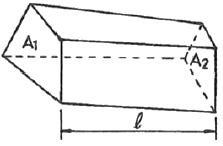
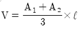
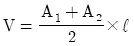
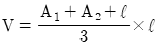
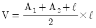
(정답률: 77%)
19. 하천의 수위를 나타내는 다음 용어 중 가장 낮은 수위를 나타내는 것은?
- 평수위
- 갈수위
- 저수위
- 홍수위
(정답률: 73%)
20. 그림과 같이 2차포물선에 의하여 종단곡선을 설치하려 한다면 C점의 계획고는? (단, A점의 계획고는 50.00이다.)
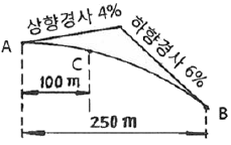
- 40.00m
- 50.00m
- 51.00m
- 52.00m
(정답률: 41%)
2과목: 사진측량 및 원격탐사
21. 레이더 위성영상의 주요 활용 분야가 아닌 것은?
- 수치표고모델(DEM) 제작
- 빙하 움직임 조사
- 지각변동 조사
- 토지피복 조사
(정답률: 68%)
22. 다음 중 절대(대지)표정과 관계가 먼 것은?
- 경사 결정
- 축척 결정
- 방위 결정
- 초점거리의 조정
(정답률: 65%)
23. 사진측량의 모델에 대한 정의로 옳은 것은?
- 편위수정된 사진이다.
- 촬영 지역을 대표하는 사진이다.
- 한 장의 사진에 찍힌 단위면적의 크기이다.
- 중복된 한 쌍의 사진으로 입체시 할 수 있는 부분이다.
(정답률: 73%)
24. 해석식 도화의 공선조건식에 대한 설명으로 틀린 것은?
- 지상점, 영상점, 투영중심이 동일한 직선상에 존재한다는 조건이다.
- 하나의 사진에서 충분한 지상기준점이 주어진다면, 외부표정요소를 계산할 수 있다.
- 하나의 사진에서 내부, 상호, 절대표정요소가 주어지면, 지상점이 투영된 사진 상의 자료를 계산할 수 있다.
- 내부표정요소 및 절대표정요소를 구할 때 이용할 수 있다.
(정답률: 46%)
25. 사진의 크기 23cm×23cm, 초점거리 150mm인 카메라로 찍힌 항공사진의 경사각이 15°이면 이 사진의 연직점(nadir point)과 주점(principal point) 간의 거리는? (단, 연직점은 사진 중심점으로부터 방사선(radial line)위에 있다.)
- 40.2mm
- 50.0mm
- 75.0mm
- 100.5mm
(정답률: 43%)
26. 사진지도를 제작하기 위한 정사투영에서 편위수정기가 만족해야 할 조건이 아닌 것은?
- 기하학적 조건
- 입체모형의 조건
- 샤임플러그 조건
- 광학적 조건
(정답률: 45%)
27. 항공사진 카메라의 초점거리 153mm, 사진크기 23×23cm, 사진축척 1:20000, 기준면으로부터 높이가 35m일 때, 이 비고(比高)에 의한 사진의 최대 기복변위는?
- 0.370cm
- 0.186cm
- 0.256cm
- 0.308cm
(정답률: 43%)
28. 원자력발전소의 온배수 영향을 모니터링 하고자 할 때 다음 중 가장 적합한 위성영상자료는?
- SPOT 위성의 HRV 영상
- Landsat 위성의 ETM+ 영상
- IKONOS 위성의 팬크로매틱 영상
- Radarsat 위성의 SAR 영상
(정답률: 50%)
29. 축척 1:50000의 사진을 초점거리가 15cm인 항공사진 카메라로 촬영하기 위한 촬영고도는?
- 7300m
- 7500m
- 7700m
- 7900m
(정답률: 73%)
30. 항공사진측량에서 카메라 렌즈의 중심(O)을 지나 사진면에 내린 수선의 발, 즉 렌즈의 광축과 사진면이 교차하는 것은?
- 주점
- 연직점
- 등각점
- 중심점
(정답률: 70%)
31. 항공사진의 촬영고도가 2000m, 카메라의 초점거리가 210mm이고, 사진의 크기가 21cm×21cm일 때 사진 1장에 포함되는 실제면적은?
- 3.8km2
- 4.0km2
- 4.2km2
- 4.4km2
(정답률: 54%)
32. 그림은 측량용 항공사진기의 방사렌즈 왜곡을 나타내고 있다. 사진좌표가 x=3cm, y=4cm인 점에서 왜곡량은? (단, 주점의 사진좌표는 x=0, y=0이다,)
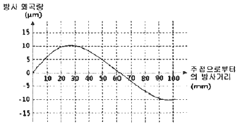
- 주점 방향으로 5μm
- 주점 방향으로 10μm
- 주점 반대방향으로 5μm
- 주점 반대방향으로 10μm
(정답률: 63%)
33. 한 쌍의 항공사진을 입체시 하는 경우 지면의 기복은 어떻게 보이는가?
- 실제 지형보다 과장되어 보인다.
- 실제 지형보다 축소되어 보인다.
- 실제 지형과 동일하다.
- 촬영 계절에 따라 다르다.
(정답률: 70%)
34. 항공사진측량의 작업에 속하지 않는 것은?
- 대공표지 설치
- 세부도화
- 사진기준점 측량
- 천문측량
(정답률: 70%)
35. 8bit gray level(0~255)을 가진 수치영상의 최소 픽셀 값이 79, 최대 픽셀 값이 156이다. 이 수치영상에 선형대조비확장(Linear Contrast Stretching)을 실시할 경우 픽셀 값 123의 변화된 값은? (단, 계산에서 소수점 이하 값은 무시(버림)한다.)(오류 신고가 접수된 문제입니다. 반드시 정답과 해설을 확인하시기 바랍니다.)
- 143
- 144
- 145
- 146
(정답률: 48%)
36. 항공레이저측량을 이용하여 수치표고모델을 제작하는 순서로 옳은 것은?
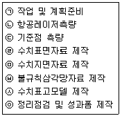
- ㉠→㉡→㉢→㉣→㉤→㉥→㉦→㉧
- ㉠→㉡→㉣→㉢→㉥→㉤→㉦→㉧
- ㉠→㉡→㉢→㉤→㉦→㉣→㉥→㉧
- ㉠→㉡→㉢→㉥→㉤→㉣→㉦→㉧
(정답률: 67%)
37. 프랑스, 스웨덴, 벨기에가 협력하여 개발한 상업위성으로 입체모델을 형성하여 촬영할 수 있는 인공위성은?
- SKYLAB
- LANDSAT
- SPOT
- NIMBUS
(정답률: 61%)
38. 디지털 영상에서 사용되는 비트맵 그래픽형식이 아닌 것은?
- BMP
- JPEG
- DWG
- TIFF
(정답률: 69%)
39. 수치영상에서 표정을 자동화하기 위하여 필요한 방법은?
- 영상정합
- 영상융합
- 영상분류
- 영상압축
(정답률: 68%)
40. 상호표정인자를 외전인자와 평행인자로 구분할 때, 평행인자에 해당하는 것은?
- k
- by
- ω
- Ψ
(정답률: 66%)
3과목: GIS 및 GPS
41. 지리정보시스템(GIS)의 지형공간정보 관련자료를 처리하는데 있어서 필요한 과정이 아닌 것은?
- 자료입력
- 자료개발
- 자료 조작과 분석
- 자료출력
(정답률: 66%)
42. 다음과 같은 데이터에 대한 위상구조 테이블에서 ㉠과 ㉡의 내용으로 적합한 것은?
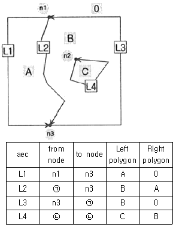
- ㉠:n1, ㉡:n2
- ㉠:n1, ㉡:n3
- ㉠:n3, ㉡:n2
- ㉠:n3, ㉡:n1
(정답률: 70%)
43. 지리정보시스템(GIS)에 대한 설명으로 옳지 않은 것은?
- 지리정보의 전산화 구조
- 고품질의 공간정보 활용 도구
- 합리적인 공간의사결정을 위한 도구
- CAD 및 그래픽 전용 도구
(정답률: 71%)
44. 보기의 그림 중 토폴로지가 다른 것은?
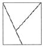
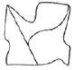
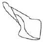
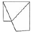
(정답률: 71%)
45. 지리정보시스템(GIS)에서 표준화가 필요한 이유에 대한 설명으로 거리가 먼 것은?
- 서로 다른 기관 간 데이터의 복제를 방지하고 데이터의 보안을 유지하기 위하여
- 데이터의 제작 시 사용된 하드웨어(H/W)나 소프트웨어(S/W)에 구애받지 않고 손쉽게 데이터를 사용하기 위하여
- 표준 형식에 맞추어 하나의 기관에서 구축한 데이터를 많은 기관들이 공유하여 사용할 수 있으므로
- 데이터의 공동 활용을 통하여 데이터의 중복구축을 방지함으로써 데이터 구축비용을 절약하기 위하여
(정답률: 71%)
46. 백터 데이터와 래스터 데이터를 비교 설명한 것을 옳지 않은 것은?
- 래스터 데이터의 구조가 비교적 단순하다.
- 래스터 데이터가 환경 분석에 더 용이하다.
- 벡터 데이터는 객체의 정확한 경계선 표현이 용이하다.
- 래스터 데이터도 벡터 데이터와 같이 위상을 가질 수 있다.
(정답률: 68%)
47. 건물이나 도로와 같이 지표면상에 존재하고 있는 모든 사물이나 개체에 대해 표준화된 고유한 번호를 부여하여 검색, 활용 및 관리를 효율적으로 하고자 하는 체계를 무엇이라 하는가?
- UGID
- UFID
- RFID
- USIM
(정답률: 55%)
48. 지리정보시스템(GIS)의 구성요소가 아닌 것은?
- 기술(software와 hardware)
- 공공 기관
- 지료(data)
- 인력
(정답률: 70%)
49. 위상모형을 통하여 얻을 수 있는 기초적 공간분석으로 적절하지 않은 것은?
- 중첩 분석
- 인접성 석
- 위험성 석
- 네트워크 석
(정답률: 70%)
50. 지리정보시스템(GIS) 산업의 성장에 긍정적인 영향을 준 것으로 거리가 먼 것은?
- 자료 시각화 기술의 발달
- 정보의 독점 강화
- 오픈소스 기반 GIS 소프트웨어의 발달
- 자료 유통체계 확립
(정답률: 80%)
51. GNSS 신호가 고각이 작을수록 대기효과의 영향을 많이 받게 되는 주된 이유는?
- 수신기 안테나의 방향인 연직방향과 차이가 있기 때문이다.
- 위성과 수신기 사이의 거리가 상대적으로 멀기 때문이다.
- 신호가 통과하는 대기층의 두께가 커지기 때문이다.
- 신호의 주파수가 변하기 때문이다.
(정답률: 56%)
52. 다음 중 지구좌표계가 아닌 것은?
- 경위도 좌표계
- 평면 직교 좌표계
- 황도 좌표계
- 국제 횡메르카토르(UTM) 좌표계
(정답률: 75%)
53. 자료의 입력과정에서 발생하는 오류와 관계없는 것은?
- 공간정보가 불완전하거나 중복된 경우
- 공간정보의 위치가 부정확한 경우
- 공간정보가 좌표로 표현된 경우
- 공간정보가 왜곡된 경우
(정답률: 73%)
54. 항법메시지 파일에 포함되어 있지 않은 정보는?
- 위성궤도
- 시계오차
- 수신기위치
- 시간
(정답률: 48%)
55. 2차원 쿼드트리(Quadtree)에서 B의 면적은? (단, 최하단에서 하나의 셀 면적을 2로 가정)
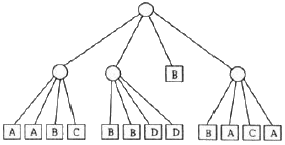
- 10
- 12
- 14
- 16
(정답률: 67%)
56. 인접한 지도들의 경계에서 지형을 표현할 때 위치나 내용의 불일치를 제거하는 처리를 나타내는 용어는?
- 영상 강조(image enhancement)
- 경계선 정합(edge matching)
- 경계 추출(edge detection)
- 편집(editing)
(정답률: 55%)
57. RTK-GPS에 의한 세부측량을 설명한 것으로 옳은 것은?
- RTK-GPS관측에 의해 지형도 등의 작성에 필요한 수치데이터를 취득하는 작업을 말한다.
- RTK-GPS관측에 의해 구조물의 변형과 변위를 관측하는 작업을 말한다.
- RTK-GPS관측에 의해 국가기준점인 삼각점을 설치하는 작업을 말한다.
- RTK-GPS관측에 의해 국도 변에 설치된 수준점의 타원체고를 구하는 작업을 말한다.
(정답률: 57%)
58. GPS에서 전송되는 L1 신호의 주파수가 1575.42MHz일 때 L1 신호의 파장 200000개의 거리는? (단, 광속(c)=299792458m/s이다.)
- 15754.200m
- 19029.367m
- 31508.400m
- 38⑤8.734m
(정답률: 39%)
59. 다음은 6×6 화소 크기의 래스터 데이터를 수치적으로 표현한 것이다. 이 데이터를 2×2 화소 크기의 데이터를 만들고자 한다. 2×2 화소 데이터의 수치값을 결정하는 방법으로 중앙값 방법(Median Method)을 사용하고자 할 때 결과로 옳은 것은?
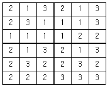
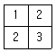
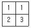
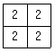
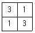
(정답률: 56%)
60. 메타데이터(Metadata)에 대한 설명으로 옳지 않은 것은?
- 공간데이터와 관련된 일련의 정보를 제공해 준다.
- 자료의 생산, 유지, 관리하는데 필요한 정보를 제공해 준다.
- 대용량 공간 데이터를 구축하는데 드는 엄청난 비용과 시간을 절약해 준다.
- 공간데이터 제작자와 사용자 모두 표준용어와 정의에 동의하지 않아도 사용할 수 있다.
(정답률: 76%)
4과목: 측량학
61. 거리 관측 시 발생되는 오차 중 정오차가 아닌 것은?
- 표준장력과 가해진 장력의 차이에 의하여 발생하는 오차
- 표준길이와 줄자의 눈금이 틀려서 발생하는 오차
- 줄자의 처짐으로 인하여 생기는 오차
- 눈금의 오독으로 인하여 생기는 오차
(정답률: 66%)
62. 삼각망 중에서 조건식의 수가 가장 많으며 정확도가 가장 높은 것은?
- 사변형망
- 단열삼각망
- 유심다각망
- 유각형망
(정답률: 55%)
63. 수준척을 사용할 때 주의해야 할 사항이 아닌 것은?
- 수준척은 연직으로 세워야 한다.
- 관측자가 수준척의 눈금을 읽을 때에는 수준척을 기계를 향하여 앞ㆍ뒤로 조금씩 움직여 제일 큰 눈금을 읽어야 한다.
- 표척수는 수준척의 이음매에서 오차가 발생하지 않도록 하여야 한다.
- 수준척을 세울 때는 침하하기 쉬운 곳에는 표척대를 놓고 그 위에 수준척을 세워야 한다.
(정답률: 65%)
64. 다각측량의 수평각 관측에서 일명 협각법이라고도 하며, 어떤 측선이 그 앞의 측선과 이루는 각을 관측하는 방법은?
- 배각법
- 편각법
- 고정법
- 교각법
(정답률: 42%)
65. 하천, 항만측량에 많이 이용되는 지형표시방법으로 표고를 숫자로 도상에 나타내는 방법은?
- 점고법
- 음영법
- 채색법
- 등고선법
(정답률: 76%)
66. 지구의 반지름이 6370km이며 삼각형의 구과량이 15“일 때 구면삼각형의 면적은?
- 1934km2
- 2254km2
- 2951km2
- 3934km2
(정답률: 45%)
67. 직사각형 토지의 관측값이 가로변=100±0.02cm, 세로변=50±0.01cm이었다면 이 토지의 면적에 대한 평균제곱근오차는?
- ±0.707cm2
- ±1.03cm2
- ±1.414cm2
- ±2.06cm2
(정답률: 59%)
68. 각관측에서 망원경의 정위, 반위로 관측한 값을 평균하면 소거할 수 있는 오차는?
- 오독에 의한 착오
- 시준축 오차
- 연직축 오차
- 분도반의 눈금오차
(정답률: 66%)
69. A점에서 트래버스 측량을 실시하여 A점에 되돌아왔더니 위거의 오차 40cm, 경거의 오차는 25cm이었다. 이 트래버스 측량의 전측선장의 합이 943.5m이었다면 트래버스 측량의 폐합오차는?
- 1/1000
- 1/2000
- 1/3000
- 1/4000
(정답률: 47%)
70. 표준길이보다 3cm가 긴 30m의 줄자로 거리를 관측한 결과, 2점간의 거리가 300m이었다. 실제거리는?
- 299.3m
- 299.7m
- 300.3m
- 300.7m
(정답률: 58%)
71. 직접수준측량을 하여 2km를 왕복하는데 오차가 ±16mm이었다면 이것과 같은 정밀도로 측량하여 10km를 왕복 측량하였을 때에 예상되는 오차는?
- ±20mm
- ±25mm
- ±36mm
- ±42mm
(정답률: 50%)
72. 삼변측량에 관한 설명 중 옳지 않은 것은?
- 삼변측량 시 cosine 제2법칙, 반각공식을 이용하면 변으로부터 각을 구할 수 있다.
- 삼변측량의 정확도는 삼변망이 정오각형 또는 정육각형을 이루었을 때 가장 이상적이다.
- 삼변측량 시 관측점에서 가능한 모든 점에 대한 변관측으로 조건식 수를 증가시키면 정확도를 향상시킬 수 있다.
- 삼변측량에서 관측대상이 변의 길이이므로 삼각형의 내각이 10° 이하인 경우에 매우 유용하다.
(정답률: 67%)
73. 광파거리 측량기에 관한 설명으로 옳지 않은 것은?
- 두 점간의 시준만 되면 관측이 가능하다.
- 안개나 구름의 영향을 거의 받지 않는다.
- 주로 중ㆍ단거리 측정용으로 사용된다.
- 조작인원은 1명으로도 가능하다.
(정답률: 63%)
74. 지형도에서 80m 등고선상의 A점과 120m 등고선상 B점간의 도상 거리가 10cm이고 두 점을 직선으로 잇는 도로의 경사도가 10%이었다면 이 지형도의 축척은?
- 1:500
- 1:2000
- 1:4000
- 1:5000
(정답률: 36%)
75. 공공측량성과를 사용하여 지도 등을 간행하여 판매하려는 공공측량시행자는 해당 지도등의 필요한 사항을 발매일 며칠 전까지 누구에게 통보하여야 하는가?
- 7일전, 국토관리청장
- 7일전, 국토지리정보원장
- 15일전, 국토관리청장
- 15일전, 국토지리정보원장
(정답률: 54%)
76. 2년 이하의 징역 또는 2천만원 이하의 벌금에 해당되지 않는 사항은?
- 측량기준점표지를 이전 또는 파손한 자
- 성능검사를 부정하게 한 성능검사대행자
- 법을 위반하여 측량성과를 국외로 반출한 자
- 측량성과 또는 측량기록을 무단으로 복제한 자
(정답률: 49%)
77. 각 좌표계에서의 직각좌표를 TM(Transverse Mercator, 횡단 머케이터) 방법으로 표시할 때의 조건으로 옳지 않은 것은?
- X축은 좌표계 원점의 적도선에 일치하도록 한다.
- 진북방향을 정(+)으로 표시한다.
- Y축은 X축에 직교하는 축으로 한다.
- 진동방향을 정(+)으로 한다.
(정답률: 47%)
78. 공간정보의 구축 및 관리 등에 관한 법률에 따른 설명으로 옳지 않은 것은?
- 모든 측량의 기초가 되는 공간정보를 제공하기 위하여 국토교통부장관이 실시하는 측량을 기본측량이라 한다.
- 국가, 지방자치단체, 그 밖에 대통령령으로 정하는 기관이 관계 법령에 따른 사업 등을 시행하기 위하여 기본측량을 기초로 실시하는 측량을 공공측량이라 한다.
- 공공의 이해 또는 안전과 밀접한 관련이 있는 측량은 기본측량으로 지정할 수 있다.
- 일반측량은 기본측량, 공공측량, 지적측량, 수로측량 외의 측량을 말한다.
(정답률: 58%)
79. 기본측량의 실시 공고에 포함되어야 하는 사항으로 옳은 것은?
- 측량의 정확도
- 측량의 실시지역
- 측량성과의 보관 장소
- 설치한 측량기준점의 수
(정답률: 53%)
80. 측량기기 중 토털 스테이션의 성능검사 주기로 옳은 것은?
- 1년
- 2년
- 3년
- 5년
(정답률: 82%)
√(5870² + 400²) ≈ 5870.99km
따라서, 지구 중심에 연직한 연장성이 이루는 지표면의 거리는 지구 반지름에서 위에서 구한 거리를 뺀 값이다.
6370.99 - 6370 = 0.99km = 990m
하지만, 문제에서 요구하는 것은 미터 단위이므로 990m를 1000으로 나누어주면 된다.
990/1000 = 0.99m
따라서, 정답은 400m에서 0.99m를 더한 400.99m이다. 그러나 보기에서는 400.03m이 정답으로 주어졌으므로, 이는 계산 과정에서 반올림한 값이다. 따라서, 정확한 계산을 하면 400.99m이지만, 반올림하여 400.03m이 된 것이다.